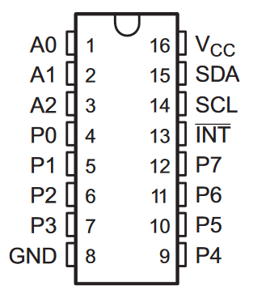
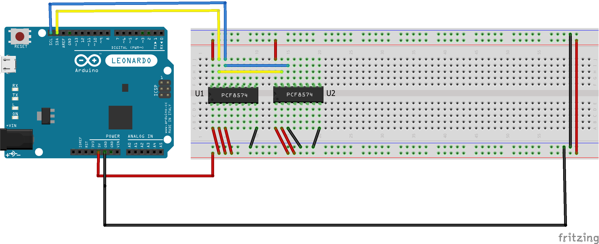

De PCF8574 is een I/O-expander: met twee pinnen van je Arduino krijg je er acht in- of uitgangen bij, en je kan er meerdere aan dezelfde bus hangen.
De I²C bus bestaat uit twee lijnen: SDA (Serial Data) en SCL (Serial Clock). Meestal worden ook Vcc en GND meegenomen, waardoor je in de praktijk een 4-lijns bus krijgt.
Op de Arduino UNO liggen SDA en SCL vast: SDA is A4 en SCL is A5. Op een UNO R3 zijn diezelfde twee lijnen ook nog eens apart uitgebracht naast de AREF-pin, dus je mag ze daar even goed aansluiten. Je kiest die pinnen niet zelf, want de I²C-hardware in de chip hangt eraan vast. Op een Leonardo, die je in sommige schema's hier ziet staan, zijn het pinnen 2 en 3.
Op deze bus kan je de PCF8574 aansluiten. Per PCF8574 krijg je 8 extra I/O-lijnen, en er kunnen tot 8 exemplaren van deze chip op dezelfde bus geplaatst worden. Met 2 pinnen van de Arduino beschik je dus over maximaal 64 extra in- en uitgangen.
We beginnen met 1 PCF8574, goed voor 8 extra ingangen en/of uitgangen. De aansluitingen zien er als volgt uit:

De vier pinnen die op de bus aangesloten worden zijn Vcc en GND voor de voeding, en SDA en SCL voor de communicatie. De pinnen P0 tot en met P7 zijn de 8 extra I/O-aansluitingen die we willen. Blijven nog over: A0 tot A2 en /INT.
Elk I²C-component heeft een eigen ingebouwd adres dat het uniek maakt op de bus. Aan de hand van dat adres kan de master naar die component schrijven of ervan lezen.
Er zijn twee versies van de PCF8574. De ene heeft basisadres 0x20, de andere (de A-versie, herkenbaar aan de A in de typenaam zoals PCF8574AN) heeft basisadres 0x38. De lijnen A2, A1 en A0 zijn verbonden met de laagste 3 bits van dat adres. Nemen we als voorbeeld de versie met basisadres 0x38, dan is het adres zo opgebouwd:
| bit 6 | bit 5 | bit 4 | bit 3 | bit 2 | bit 1 | bit 0 |
|---|---|---|---|---|---|---|
| 0 | 1 | 1 | 1 | A2 | A1 | A0 |
Met die drie lijnen A2, A1 en A0 kan je 8 verschillende adressen instellen. Staan ze alle drie op 0, dan krijg je het basisadres 0x38. Zet je A0 op 1, dan heeft de chip adres 0x39. Door die drie lijnen elke mogelijke combinatie te geven kan je 8 PCF8574's op dezelfde bus gebruiken, goed voor 64 extra lijnen.
Gebruik je daarnaast ook nog de versie met basisadres 0x20, dan kan je er nog eens 8 chips bij plaatsen, wat het totaal op 128 extra I/O-lijnen brengt.
A0, A1 en A2 moeten altijd ergens aan vasthangen, aan GND of aan Vcc. Laat je ze los, dan is het adres van je chip niet voorspelbaar en vind je de chip soms wel en soms niet terug met de I2C scanner.
Op onderstaand schema staan twee PCF8574's op dezelfde bus. De I2C scanner vindt de adressen 0x3F en 0x23.

Aangezien er twee types PCF8574 bestaan, de ene met basisadres 0x38 en de andere met 0x20, is meteen duidelijk dat we hier één chip van elke soort hebben.
Bekijken we U1, dan zien we dat de drie adresbits (pinnen 1, 2 en 3) allemaal hoog staan. Bij het basisadres komt dus de waarde 7 bij. Die chip heeft dan als adres 0x38 + 0x07 (= 0x3F) of 0x20 + 0x07 (= 0x27). Daaruit besluiten we dat adres 0x3F bij U1 hoort, en dat het andere gevonden adres (0x23) dat van U2 moet zijn.
Dit schema komt uit het cursusmateriaal en is met een Leonardo getekend. Voor de PCF8574 maakt dat niets uit: het zijn dezelfde vier draden. Werk je met een UNO, sluit SDA dan aan op A4 en SCL op A5.
De /INT-pin wordt geactiveerd zodra er een wijziging optreedt op één of meer van de 8 I/O-lijnen. Daardoor kan die pin dienen als interruptsignaal voor de master wanneer je de 8 lijnen als ingangen gebruikt. In plaats van constant via de bus te moeten checken of een pin van waarde veranderd is, krijg je via /INT een signaal.
In dit labo gebruiken we die functie nog niet. Ze komt terug in labo 7, waar je hem aan een interruptpin van je Arduino hangt en je expander je dus zelf komt melden dat er iets veranderd is. Zie De PCF8574 laat van zich horen.
We maken gebruik van de Wire-bibliotheek. Bovenaan je programma staat dus de regel:
#include <Wire.h>Vooraleer je de I²C kan gebruiken moet je het Wire-object initialiseren. Dat doe je in de setup()-functie:
Wire.begin();Het schrijven naar de I²C bus gebeurt in 3 stappen.
Eerst wordt de communicatie geïnitialiseerd:
Wire.beginTransmission(adres);adres is het adres van de chip die je wil aanspreken. Wanneer A2, A1 en A0 op 0 staan gebruik je hier 0x38 (of 0x20, afhankelijk van je type).
Vervolgens geef je de waarde van de byte mee die op de uitgangen moet komen:
Wire.write(waarde);waarde mag je in elk talstelsel schrijven. Wil je het bitpatroon 10101010 op de pinnen P7 tot P0 plaatsen, dan schrijf je 170 decimaal, 0xAA hexadecimaal of B10101010 binair.
De communicatie wordt afgesloten met:
Wire.endTransmission();Het lezen gebeurt op een net iets andere manier. Om een byte te lezen van de I/O-lijnen begin je met:
Wire.requestFrom(adres, aantal);Het adres is dat van het IC. aantal geeft aan hoeveel bytes informatie je verwacht. Bij een PCF8574 is dat altijd 1, maar er bestaan ook I²C-sensoren die meerdere bytes na elkaar versturen.
Vervolgens kijk je of er een byte klaarstaat om van de PCF8574 naar de master te gaan:
if (Wire.available())
{
waarde = Wire.read();
}De pinnen van de PCF8574 zijn quasi-bidirectioneel: er is geen aparte instelling voor ingang of uitgang. Een pin die je wil lezen, moet in zijn uitgangslatch een 1 hebben staan. Bij het opstarten staan alle pinnen hoog, dus meestal merk je hier niets van. Maar heb je er eerder een 0 naar geschreven, dan lees je die 0 terug en lijkt je knop permanent ingedrukt. Schrijf in je setup() dus een 1 naar elke pin die je als ingang gebruikt.
Voor de volledige specificaties, zoals hoeveel stroom een uitgang kan leveren of opnemen, kan je terecht in de datasheet.